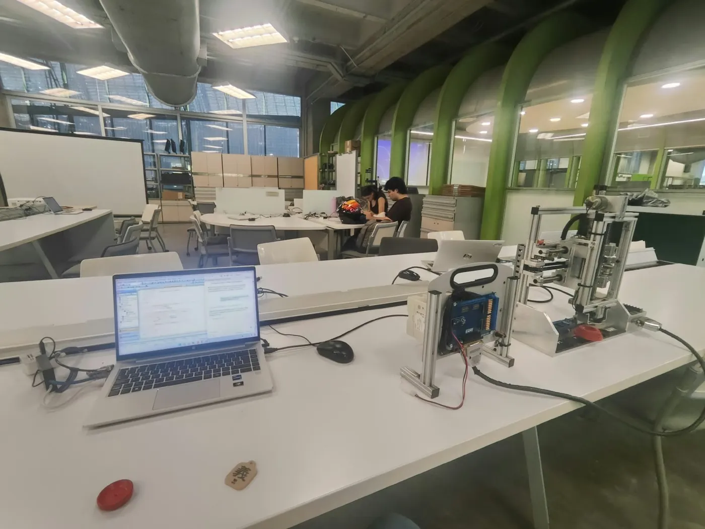
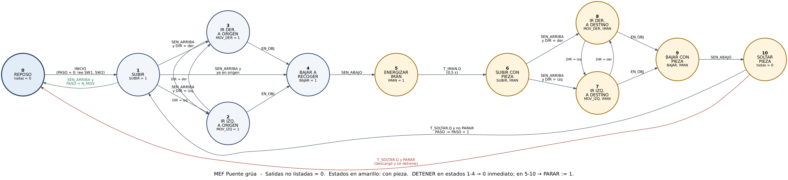
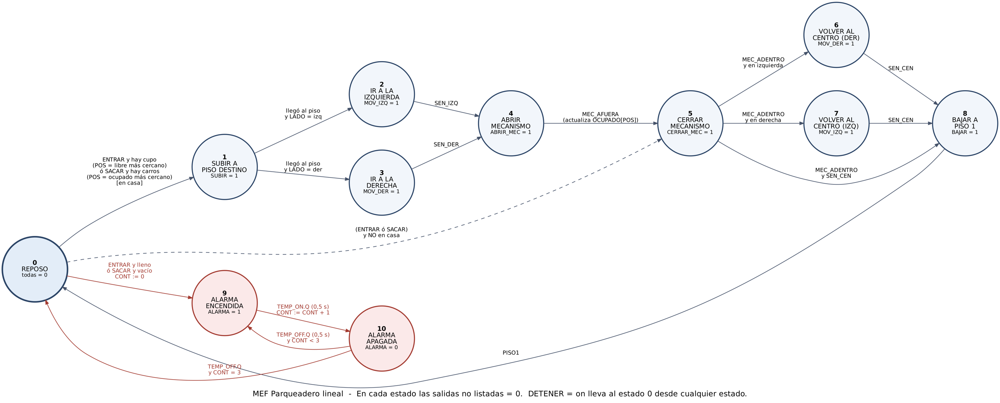

Lenguajes Técnicos de Programación · EAFIT
MEF con PLC상태 기계 시뮬레이터
Dos plantas del laboratorio controladas con una máquina de estados finitos en texto estructurado. Cada simulador ejecuta el mismo programa que se carga en el PLC Mitsubishi FX3G, traducido línea por línea y corriendo ciclo a ciclo contra un modelo de la planta.
- PLCMitsubishi FX3G
- IDEGX Works2 · ST
- MEF11 / 16 estados
- Scan10 ms
Simuladores 시뮬레이터
Pon SW1 (orden) y SW2 (punto de origen) y oprime Armar pila para colocar las piezas. Luego oprime Inicio. Las piezas deben quedar en P2 con la grande arriba y la pequeña abajo, en 3 movimientos si la pila es ascendente o en 5 si es descendente. Mantén Detener para probar el paro.
* El enunciado no asigna entrada a SW2; en el programa se usa X23 y se debe confirmar en el banco.
Con Entrar se coloca un carro en la entrada y el elevador lo lleva al puesto libre más cercano; con Sacar se retira el carro ocupado más cercano. Si no hay cupo o no hay carros, la alarma parpadea 3 veces. Forzar lleno simula poner OCUPADO[0..7] en 1 desde el Watch.
Pulsadores y alarma (X20–X22, Y6) asignados por el grupo; el enunciado del parqueadero no los define.
Pruebas en el PLC 실험

- Compilación (Rebuild All): 0 errores, 0 advertencias
- Conexión USB con el FX3G y Write to PLC completo
- Verificación PLC contra proyecto: Match
- Diagnóstico: PLC en RUN sin errores
- 6 / 6 pruebas del protocolo cumplen
Abajo están los videos de cada prueba en el banco del puente grúa.
Máquina de estados 상태 기계


El electroimán toma solo la pieza de encima, así que cada traslado invierte el orden de la pila.
| SW1 SW2 | Caso | Secuencia | Mov. |
|---|---|---|---|
| 0 0 | Asc. en P1 | P1→P2 ×3 | 3 |
| 0 1 | Asc. en P3 | P3→P2 ×3 | 3 |
| 1 0 | Desc. en P1 | P1→P3 ×2, P1→P2, P3→P2 ×2 | 5 |
| 1 1 | Desc. en P3 | P3→P1 ×2, P3→P2, P1→P2 ×2 | 5 |
La pila se lee desde arriba: ascendente = pequeña arriba. En P2 debe quedar grande arriba, mediana y pequeña abajo.
Los 8 puestos se numeran por cercanía a la entrada. El piso y el lado salen de dos operaciones enteras:
PISO = POS / 2 + 1 LADO = POS MOD 2
El primer 0 del vector es el puesto libre más cercano, y el primer 1 es el ocupado más cercano.
Código ST 코드
Cargando…